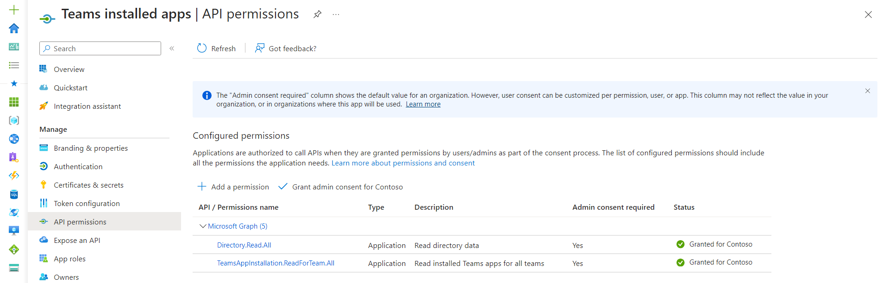

List apps within Teams in a tenant
Summary
This script lists all installed apps in Microsoft Teams teams in the tenant and exports the results in a CSV.

Permissions
The PowerShell version of the script requires Microsoft Entra ID App Registration with the Application Permissions as follows:
- Directory.Read.All
- TeamsAppInstallation.ReadForTeam.All

Note: You can skip this step, if you are planning to use CLI for Microsoft 365.
Implementation
- Open Windows PowerShell ISE
- Create a new file
- Copy the code below
- Save the file and run it
[CmdletBinding()]
param (
[parameter(Mandatory)][string] $TenantID,
[parameter(Mandatory)][string] $ClientID,
[parameter(Mandatory)][string] $ClientSecret
)
function Get-AccessToken {
# Construct URI
$uri = "https://login.microsoftonline.com/$TenantID/oauth2/v2.0/token"
# Construct Body
$body = @{
client_id = $ClientID
client_secret = $ClientSecret
scope = 'https://graph.microsoft.com/.default'
grant_type = 'client_credentials'
}
# Fix for issue: The underlying connection was closed
[Net.ServicePointManager]::SecurityProtocol = [Net.SecurityProtocolType]::Tls12
# Get OAuth 2.0 Token
$tokenRequest = Invoke-WebRequest -Method Post -Uri $uri -ContentType 'application/x-www-form-urlencoded' -Body $body -UseBasicParsing
# Access Token
return ($tokenRequest.Content | ConvertFrom-Json).access_token
}
function Get-GraphQueryOutput {
param(
[parameter(Mandatory = $true)][String] $Uri
)
$retryCount = 0
$maxRetries = 3
$pauseDuration = 2
$token = Get-AccessToken
$allRecords = @()
while ($Uri) {
try {
Write-Host "Invoking Graph query: $($Uri)"
$query = Invoke-RestMethod -Method Get -Uri $Uri -ContentType 'application/json;odata.metadata=none' -Headers @{Authorization = "Bearer $token" }
$recordToAdd = ($query | Select-Object Value).Value
if (-not $recordToAdd) {
$recordToAdd = $query
}
$allRecords += $recordToAdd
if ($query.'@odata.nextLink') {
# set the url to get the next page of records
$Uri = $query.'@odata.nextLink'
}
else {
$Uri = $null
}
}
catch {
Write-Host "StatusCode: " $_.Exception.Response.StatusCode.value__
Write-Host "StatusDescription:" $_.Exception.Response.StatusDescription
if ($_.Exception.Response.StatusCode.value__ -eq 401) {
$token = Get-AccessToken
}
if ($_.ErrorDetails.Message) {
Write-Host "Inner Error: $_.ErrorDetails.Message" -ForegroundColor Red
}
if ($_.Exception.Response.StatusCode.value__ -eq 404) {
# If the error is "Not Found", let us not retry
$retryCount = $maxRetries + 1
}
if ($retryCount -ge $maxRetries) {
# Not going to retry again
$Uri = $null
Write-Host "Not going to retry..." -ForegroundColor Red
}
else {
$retryCount += 1
$pauseDuration = $pauseDuration * 5
Write-Host "Retry attempt $retryCount after a $pauseDuration second pause..." -ForegroundColor Yellow
Start-Sleep -Seconds $pauseDuration
}
}
}
return $allRecords
}
Start-Transcript -Path ".\TeamsInstalledApps-Logs-$((Get-Date).toString("dd-MM-yyyy")).log"
$allTeams = Get-GraphQueryOutput -Uri "https://graph.microsoft.com/v1.0/groups?`$filter=resourceProvisioningOptions/Any(x:x eq 'Team')"
ForEach ($team in $allTeams) {
Write-Host "Processing Team: $($team.displayName): $($team.id)" -ForegroundColor Yellow
$installedApps = Get-GraphQueryOutput -Uri "https://graph.microsoft.com/v1.0/teams/$($team.id)/installedApps?`$expand=teamsApp(`$select=id,displayName,distributionMethod)"
ForEach ($app in $installedApps) {
Write-Host "Found app: $($app.teamsApp.displayName): $($app.teamsApp.id)"
$reportLine = [PSCustomObject][Ordered]@{
"Team ID" = $team.id
"Team Name" = $team.displayName
"App ID" = $app.teamsApp.id
"App Name" = $app.teamsApp.displayName
"Distribution Method" = $app.teamsApp.distributionMethod
}
$reportLine | Export-Csv -NoTypeInformation -Path ".\TeamsInstalledApps-$((Get-Date).toString("dd-MM-yyyy")).csv" -Encoding UTF8 -Append
}
}
Write-Host "Finished!" -ForegroundColor Green
Stop-Transcript
Check out the PowerShell to learn more at: PowerShell Documentation | Microsoft Learn
Contributors
| Author(s) |
|---|
| Smita Nachan |
| Nanddeep Nachan |
References
Disclaimer
THESE SAMPLES ARE PROVIDED AS IS WITHOUT WARRANTY OF ANY KIND, EITHER EXPRESS OR IMPLIED, INCLUDING ANY IMPLIED WARRANTIES OF FITNESS FOR A PARTICULAR PURPOSE, MERCHANTABILITY, OR NON-INFRINGEMENT.